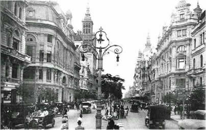
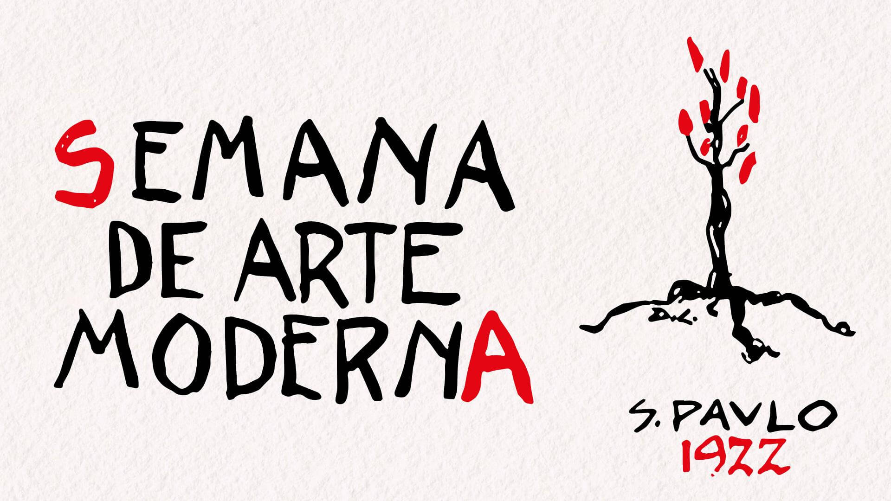

0:00 / 0:00
O que foi o Pré-Modernismo?
O Pré-Modernismo não é considerado uma escola literária, pois não possui uma estética unificada ou um grupo de autores com um manifesto em comum. Trata-se, na verdade, de um movimento de transição, que já antecipa muitas das críticas e inovações que viriam com o Modernismo.
Contexto histórico
Esse período foi marcado por diversas transformações sociais, políticas e econômicas no Brasil:
Esses acontecimentos ajudaram a moldar o tom crítico, social e realista das obras pré-modernistas.
Características do Pré-Modernismo
Principais autores e obras
1. Euclides da Cunha
2. Lima Barreto
3. Monteiro Lobato
4. Graça Aranha
Diferenças entre o Pré-Modernismo e o Modernismo
| Aspecto | Pré-Modernismo | Modernismo |
|---|---|---|
| Unidade estética | Não possui | Tem propostas estéticas inovadoras |
| Linguagem | Em transição (mais simples que o parnasianismo) | Livre, coloquial, experimental |
| Objetivo | Denunciar problemas do Brasil real | Romper com o passado e renovar a arte |
| Início | 1902 | 1922 (Semana de Arte Moderna) |
Semana de Arte Moderna (1922)
O Pré-Modernismo prepara o caminho para a Semana de Arte Moderna, evento que marca oficialmente o início do Modernismo no Brasil, promovendo uma renovação estética nas artes e na literatura.